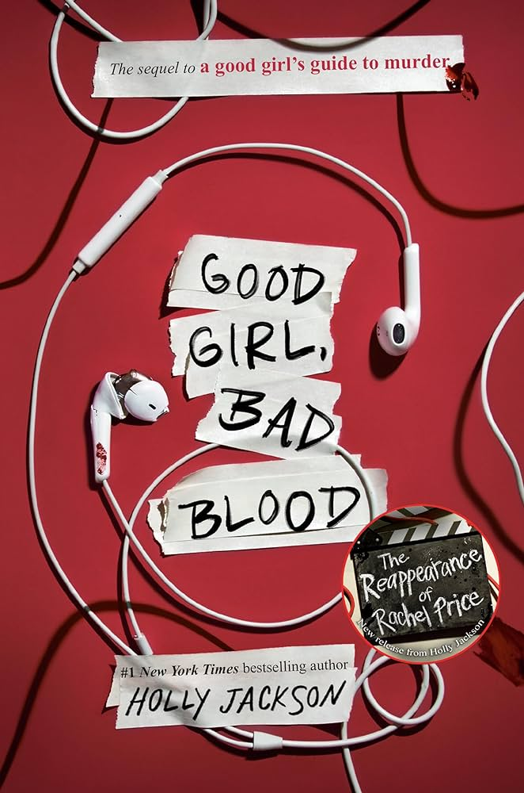

Good Girl, Bad Blood is the sequel to A Good Girl's Guide To Murder by holly jackson. The story follows pippa "pip" Fitz-Amobi who after solving
the murder case of Andie Bell in the first book decides to retire from detective work and focus on her life.
However, when someone close to her goes to missing, pip is drawn back into investing.
In this installment, pip starts a true-crime podcast, documenting her previous case. Despite her promise stay away from more investigation
She can't help but get involved when her friend connor's brother, jamie, disappears. pip realises that the local police aren't taking the
case seriously, so the text matters into her own hands.
As pip deleves deeper, she uncovers secrets that put her and those she loves in danger. The investigation is more complex and perilous
than before, leading to a tense and gripping narrative. The novel explores themes of justice, morality and the consequences of seeking the
truth, making for an intense thought-provoking read.
The book ends with significant development in pip's personal life and her understanding of justice, setting up for further stories in the series.